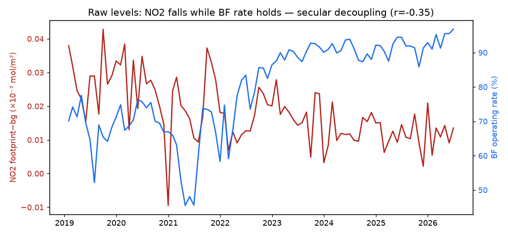
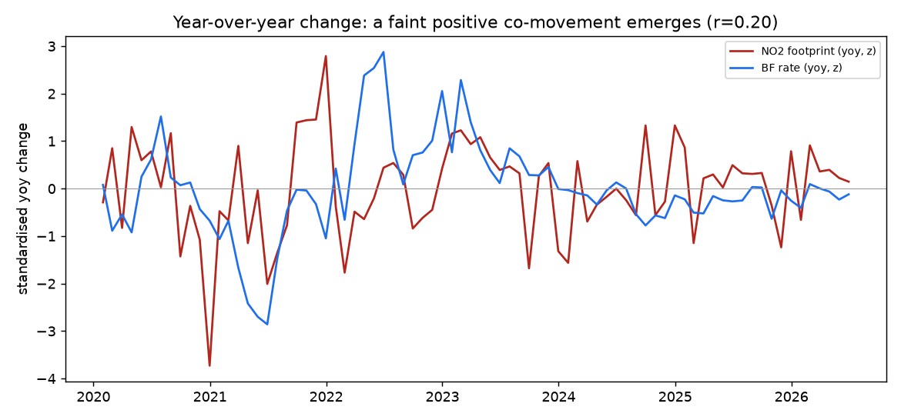
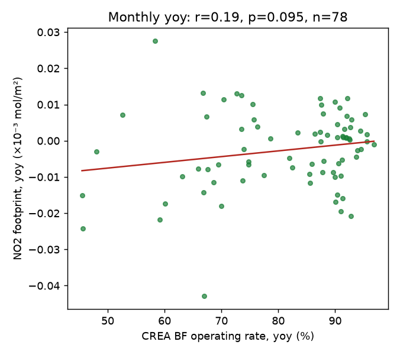
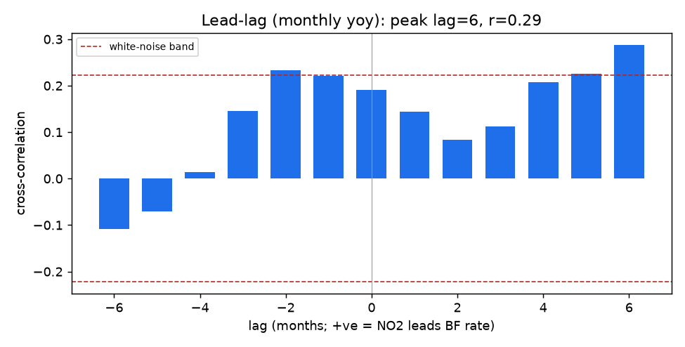
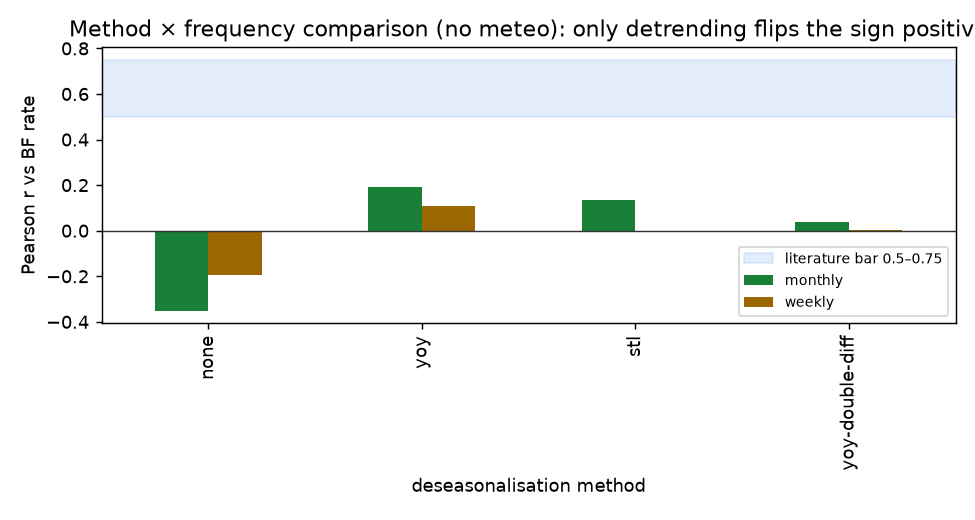
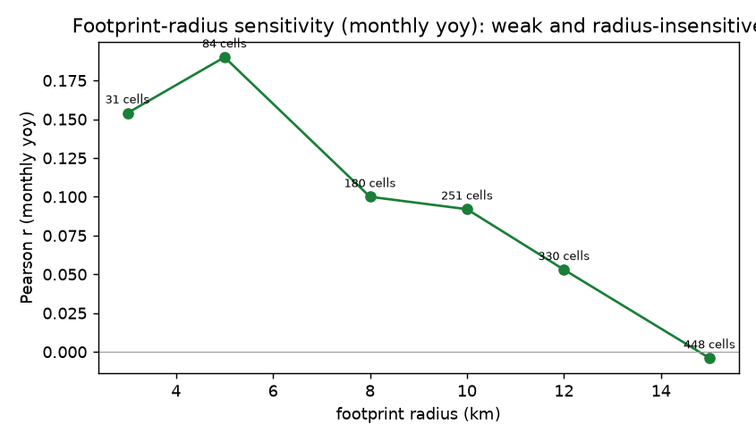

A first real, end-to-end run of the relative-index pipeline (TROPOMI NO₂ → steel-facility footprint → background subtraction → ERA5 meteo control → deseasonalisation → relative index) validated against the CREA blast-furnace operating rate, 2019–2026. The headline: the raw signal is dominated by a policy-driven decline, and only a weak, below-bar activity signal survives detrending.
In Tangshan, satellite NO₂ over the steel cluster is dominated by a policy/technology-driven decline (NO₂ falls while the blast-furnace rate holds — the Li 2024 confounder); after removing that secular trend a faint, correctly-signed activity signal appears (monthly year-over-year r ≈ 0.19, peak +0.29 at lag +6 mo) but stays below the literature bar (0.5–0.75). This is an honest, mechanistically-explained near-null — a valid project outcome (Montgomery 2018; Morris & Zhang 2019), not a pipeline failure.
At the level (no detrending), the footprint NO₂ and the BF operating rate are negatively correlated (weekly r = −0.20, monthly r = −0.35, both significant). NO₂ declines across 2019–2026 while the BF rate holds: the ultra-low-emission retrofit of Chinese steel cut NO₂ per unit of output, decoupling the column from production exactly as Li 2024 documented for China's 2020–2022 NOₓ decline. This is a confounder, not inverse causation.

Removing the annual cycle and secular trend with a year-over-year change recovers the expected positive co-movement. It is weak and monthly > weekly (Morris & Zhang: weekly is noisy).



The first attempt used aggressive double-differencing and saw a flat null — an artefact, exactly as Kim 2023
warned (they used seasonal adjustment, not double-diff). Year-over-year and STL preserve the faint signal;
double-diff erases it. The default was changed from yoy-double-diff to yoy.

none = negative
(decoupling); yoy/stl = weak positive; yoy-double-diff = ≈0 (over-aggressive).
Shaded band = the literature target 0.5–0.75.| freq | meteo | deseason | n | r | p | peak lag·r |
|---|---|---|---|---|---|---|
| weekly | no | none | 377 | −0.195 | 1.3e-4 | 4 · −0.27 |
| weekly | no | yoy | 325 | +0.108 | 0.051 | −8 · 0.13 |
| weekly | no | stl | 377 | −0.006 | 0.91 | — |
| weekly | no | yoy-double-diff | 322 | 0.005 | 0.93 | — |
| monthly | no | none | 90 | −0.351 | 7.0e-4 | −6 · −0.50 |
| monthly | no | yoy | 78 | +0.190 | 0.095 | +6 · +0.29 |
| monthly | no | stl | 90 | +0.133 | 0.21 | +6 · +0.20 |
| monthly | no | yoy-double-diff | 77 | 0.036 | 0.76 | — |
| monthly | yes | yoy | 78 | +0.189 | 0.098 | +6 · +0.29 |
| monthly | yes | stl | 90 | +0.152 | 0.15 | +6 · +0.23 |
Meteo regress-out (ERA5 wind + boundary-layer height) barely moves the result here — at monthly aggregation the dominant confounder is the secular trend, not week-to-week ventilation.
The signal is strongest at a tight footprint (5 km, 84 cells, r ≈ 0.19) and decays to ≈ 0 by 15 km (448 cells) as background dilutes the steel term — consistent with the Kim/Parubets warning that source isolation, not maximal coverage, matters. (The 15 km placeholder used in the very first run was diluting the signal.)

Every execution mode is preserved and config-selectable (deseason ∈ {yoy, stl, yoy-double-diff, none}; frequency ∈ {weekly, monthly}; meteo on/off; footprint radius). Regenerate this entire page's figures + tables:
uv run noxus ingest-benchmark # CREA BF operating rate -> parquet uv run noxus grid # TROPOMI NO2 weekly cube uv run noxus ingest-era5 # ERA5 (Copernicus CDS, server-side AOI subset) uv run python analysis/preliminary_signal.py # battery + figures -> docs/figures/preliminary/
Inputs (NO₂ cube, ERA5 snapshot, derived index) are gitignored; the figures, tables and this page are committed as the publishable result.